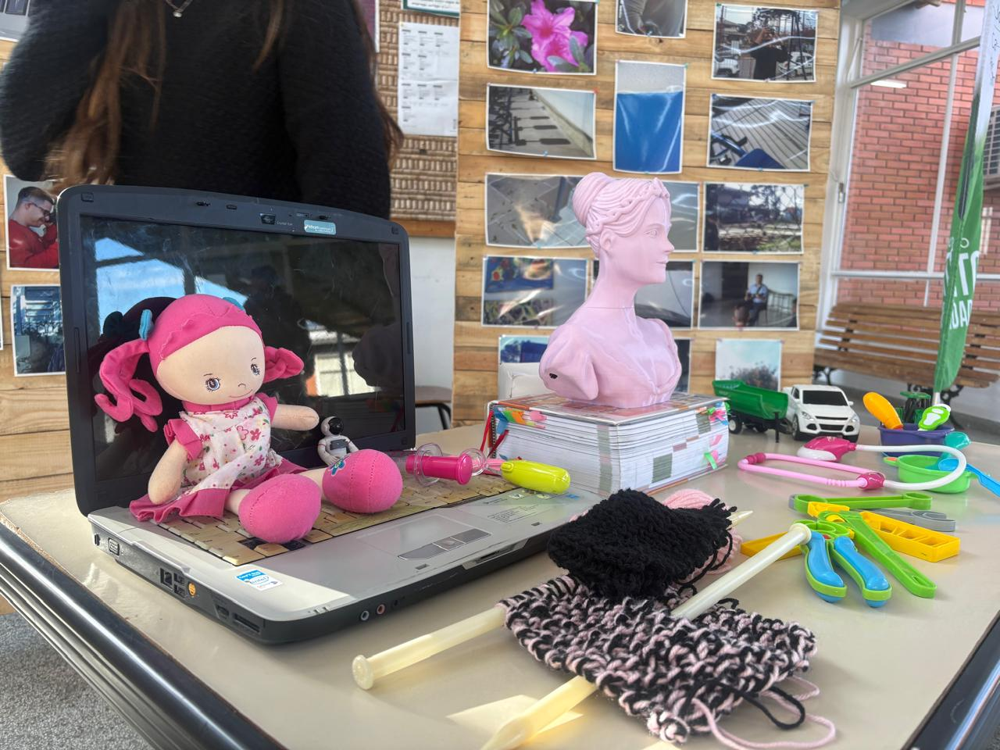

Conhecimentos sobre Ada Lovelace
Esta pesquisa de campo buscou identificar o nível de conhecimento dos participantes sobre Ada Lovelace e sua importância para a história da Computação. Cada participante respondeu apenas uma pergunta sobre sua trajetória e suas contribuições.
Além disso, na mesa da pesquisa foram colocados diferentes objetos: alguns ligados à matemática e à computação e outros relacionados ao cuidado e às tarefas domésticas, áreas que historicamente costumam ser associadas às mulheres. A intenção era perceber quais objetos as pessoas relacionavam a Ada e discutir como os estereótipos de gênero também influenciam a forma como enxergamos as mulheres na ciência.
Ver resultados →